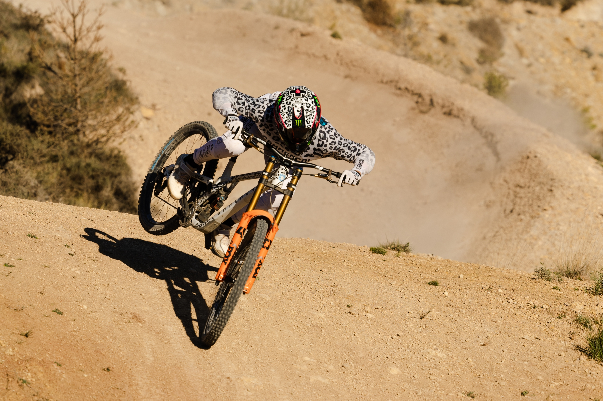
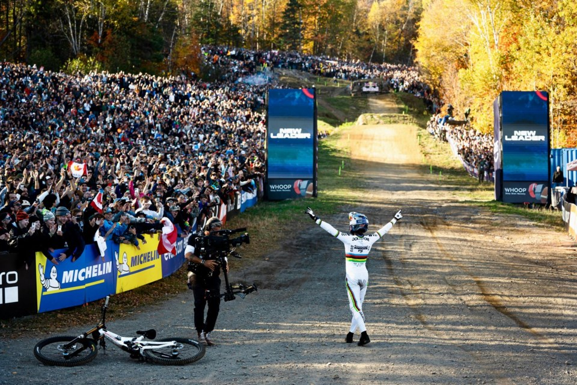

The season so far
The 2026 WHOOP UCI Downhill World Cup has already produced exciting racing across several world-class venues. Riders have battled steep, rocky and technical courses while fighting for valuable World Cup points.


As the season progresses, every race becomes more important. Riders are chasing podium finishes while trying to stay consistent throughout the championship. Small mistakes can mean the difference between winning and missing the podium by fractions of a second. Jordan Willians currently holds the overall lead, with teammate Finn Iles hot on his heels. Both riders have managed to obtain two wins so far, who knows if they will hold the lead or another rider will swoop in to take it all away. The battle for the overall World Cup title remains intense as the series heads toward its final rounds.
Venue: Les Gets/Haute-Savoie, France 🇫🇷
Date: August 21–23, 2026
One of the newest additions to the World Cup calendar, featuring steep forests, rock gardens and massive jumps.
Venue: 1199/Whistler Bike Park, Canada 🇨🇦
Date: September 11–13, 2026
The newly improved, steep and technical loamy Crankworx track makes its debut at the 2026 World Cup.
Venue: Lake Placid Olympic Site, USA
Date: October 2–4, 2026
Only its second time hosting the world cup, the dry and dusty high speed track will be a riveting final round.